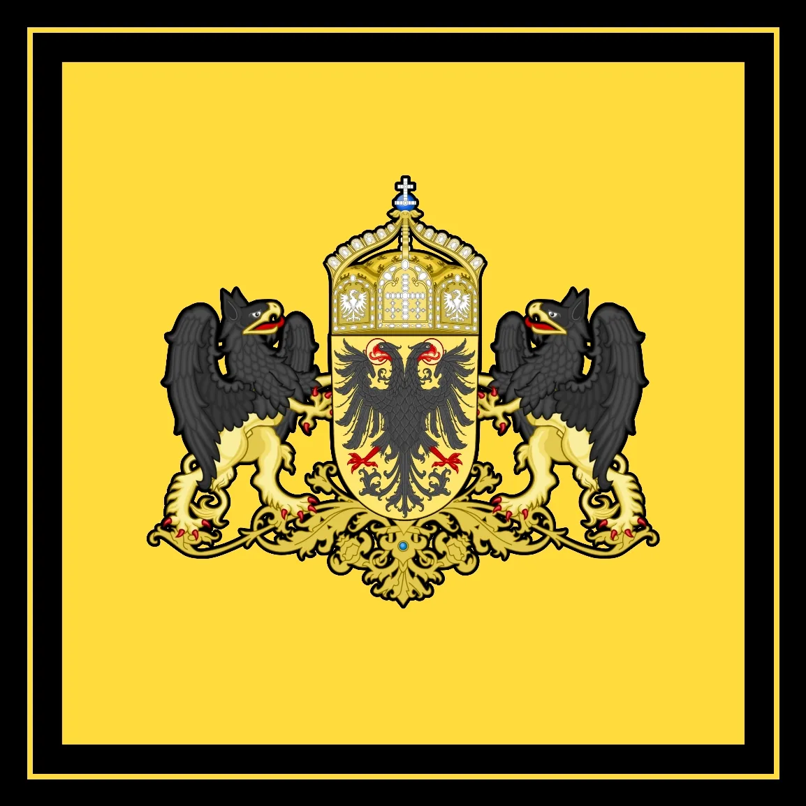
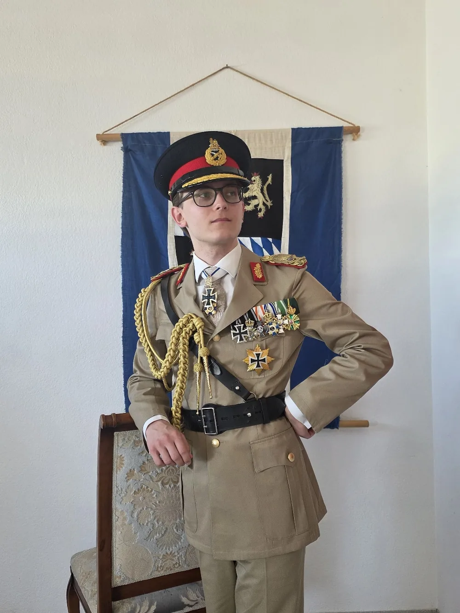

Der Souverän

Alexander IX.
Seine kaiserliche und königliche Majestät Alexander IX. von Gottes Gnaden, Kaiser des Imperium Germanicum, König der Westerwälder Union, König von Apulien, Erzherzog von Österreich und Fürst von Sayen-Wittgenstein-Sayen ist der Souverän und somit Staatsoberhaupt des Imperium Germanicum.
Alexander IX. wurde am 10.05.2004 in Hachenburg der Hauptstadt der Westerwälder Union geboren, seit dem 16.01.2024 ist er König der Westerwälder Union und wurde am 14.05.2026 vom Senat für 1 Jahr zum Kaiser und Oberbefehlshaber der Streitkräfte gewählt.
Er ist selbst einer der 9 Kurfürsten des Reiches und gehört der Fraktion der Westerwälder Union an.
Seine Majestät zeichnet sich vor allem durch ein ruhiges und besonnenes Charakterbild aus, er besitzt aber auch exzentrische Marotten zum Beispiel müssen Kaltgetränke stets mit Eis serviert werden, vorzugsweise Eiskugeln.
Außerdem legt seine Majestät viel Wert auf eine strikte Einhaltung der protokollarischen Etikette.
Seine Majestät beherrschen die deutsche Sprache und etwas gebrochen auch die englische Sprache, er übt im Augenblick die italienische Sprache.
Kaiser, König und Erzherzog
Ex Officio ist der Souverän nicht nur Kaiser des Imperium Germanicum, sondern in Personalunion auch König von Apulien.
Das Königreich Apulien ist de jure ein selbständiger Staat de facto aber durch Verwaltung und Militär an das Reich gebunden.
Außerdem ist der Souverän zusätzlich Ex Officio der Erzherzog von Österreich wobei Österreich vom Status nicht wie das Königreich Apulien ein eigener Staat unter kaiserlicher Kontrolle ist sondern dem Reich voll angehört.
Aus der Kombination aus Kaiserthron, Königsthron und der Würde des Erzherzogs ergibt sich auch der Titel (kaiserliche und königliche Majestät).

– Bild vergrößern
– Bild vergrößernDer Arbeitssitz seiner Majestät befindet sich zusammen mit der Senatsverwaltung im Berliner Schloss.
Die private Residenz des Souveräns befindet sich jedoch im Schloss Charlottenburg, welches sich ebenfalls in der Reichshauptstadt befindet.